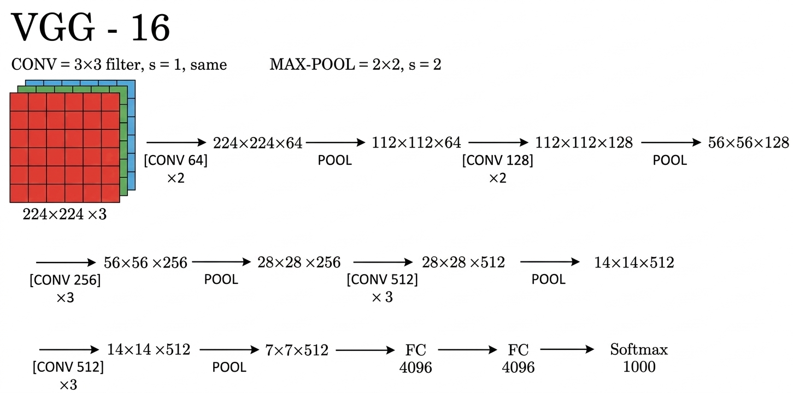
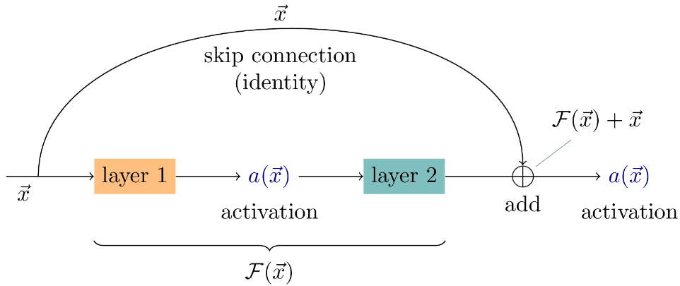
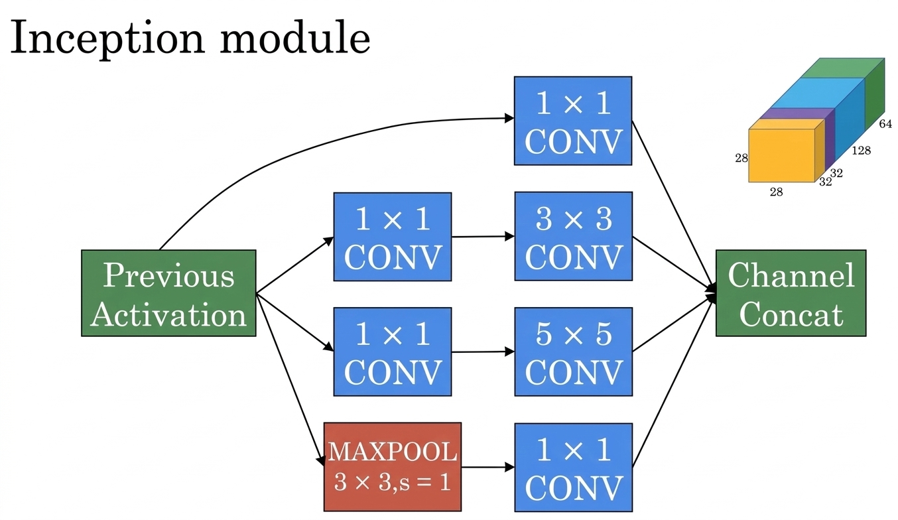

Chapter 10——Classic Networks
10.1 LeNet、AlexNet、VGGNet

LeNet中主要使用的是average pooling；
当时人们主要利用sigmoid/tanh激活函数，而不是ReLU激活函数；
奠定了先卷积再池化最后全连接的范式。

使用ReLU激活函数

其中的16指的是VGG中有16个具有参数的层。
10.2 ResNet
ResNet的提出是因为在普通的深度网络当中，随着层数增加，有的时候模型的性能反而会出现退化，按照理论而言，当浅层网络效果不错的时候，网络层数的增加即使不会引起精度的增加，也不至于导致模型效果表差。
然而事实上，由于非线性激活函数的存在，会造成很多信息的不可逆损失。ResNet就是提出一种方法让网络具有恒等映射的能力，即随着网络层数的增加，深层网络至少不会差于浅层网络（随着网络的加深，使

若套用之前的符号习惯，我们可以将残差连接的公式写为
其中

10.3 GoogLeNet/Inception Network
在GoogLeNet中（也被称为Inception Network），基本的卷积块被称为Inception block，在开始介绍之前，我们先说明什么是1 by 1 convolutions。也许对于

至此，我们有

10.4 MobileNet
我们已经学习了很多种卷积网络的结构，但是我们会发现它们大多需要大量的算力，这里我们将介绍一种深度可分离卷积（depthwise-separable convolutions），以实现降低对于算力的要求。

深度可分离卷积分为depthwise卷积和pointwise卷积，通过这种计算方式，其计算成本可以为普通卷积的